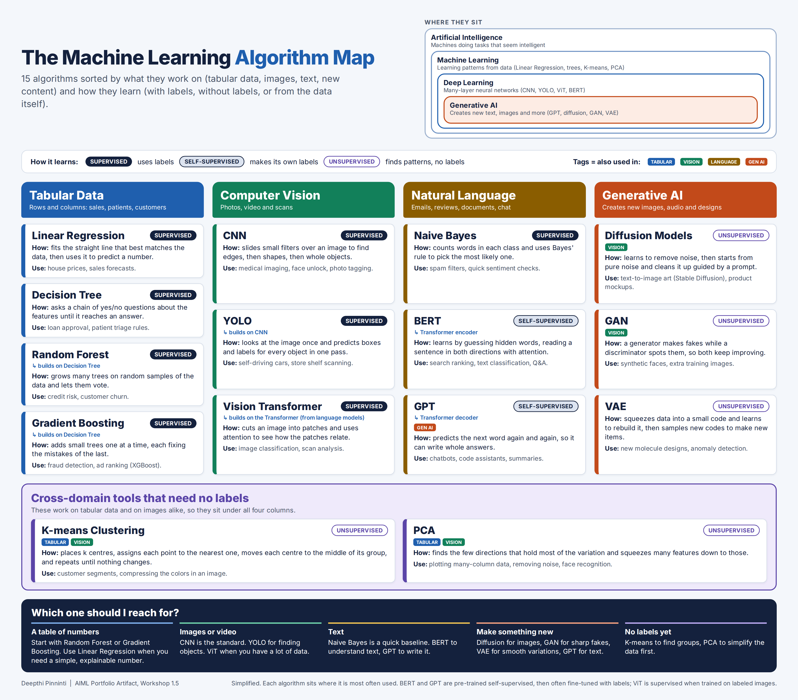

The Machine Learning Algorithm Map
A visual framework that sorts 15 machine learning algorithms by how they learn and by the kind of data they work on: tabular data, computer vision, natural language, and generative AI.
Introduction
This artifact was created for Workshop 1.5 in the AIML course at Indiana Wesleyan University. Algorithms are the base of machine learning, but a list of names does not help someone choose between them. This map puts 15 well known algorithms side by side so a reader can see what each one is for, how it learns, and how it relates to the others.
Description
An infographic with four columns for the main application domains (Tabular Data, Computer Vision, Natural Language, Generative AI) and a band for tools that work across domains. Every card names the algorithm, shows whether it is supervised, unsupervised, or self-supervised, explains how it works in one sentence, and gives a real use case. Small tags show where else an algorithm is used and which algorithms build on each other. A text version of the same information is included below the picture.
Objective
To classify key machine learning algorithms by learning style and application domain, and to show their similarities and differences in a way that is clear to a reader who is not a specialist.
Process
- Listed the algorithms named in the assignment and the two course videos, then added a few so every domain had at least three.
- Asked what kind of data each algorithm works on, and placed it in a domain column.
- Asked how each algorithm learns, and gave it a supervised, unsupervised, or self-supervised badge.
- Wrote a one sentence explanation and a real use case for each, in plain words.
- Added relationship tags and a decision strip ("Which one should I reach for?"), then reviewed every placement and moved the ones that did not fit cleanly.
Tools
- HTML and CSS for the layout, so the text stays sharp and the design is easy to change.
- Headless Chromium (Playwright) to export the finished layout as a high resolution PNG and PDF.
- Course videos on AI, ML, DL, and GenAI as the starting point for the categories.
- An AI assistant (Claude) to help draft descriptions and check my wording. I reviewed and edited every entry.
Value Proposition
Shows that I can organize a large technical topic into a clear structure and explain it to a mixed audience. That skill is needed when recommending an AI approach to a business team.
Unique Value
Most algorithm charts sort by one idea only. This one uses two at once, the data type and the learning style, and adds relationship tags and a quick decision guide. It also admits where the categories blur, for example BERT and GPT, which are neither fully supervised nor fully unsupervised.
Relevance
Connects to my Salesforce work. Einstein Prediction Builder uses tabular methods, Einstein Vision uses deep learning for images, and Agentforce is built on large language models like GPT. It also connects to my Workshop 1.4 project, where a Decision Tree sorted fruit photos with about 54 percent accuracy. This map shows why a CNN would suit that data better.
The Algorithm Map

On a small screen, scroll the picture sideways. Open the full size image or download the PDF.

All 15 algorithms at a glance
| Algorithm | Learning type | Domain | How it works | Example use |
|---|---|---|---|---|
| Linear Regression | Supervised | Tabular | Fits the best straight line to predict a number | House prices, sales forecasts |
| Decision Tree | Supervised | Tabular | Asks a chain of yes/no questions about the features | Loan approval, patient triage |
| Random Forest | Supervised | Tabular | Many trees on random samples that vote | Credit risk, customer churn |
| Gradient Boosting | Supervised | Tabular | Small trees added one by one, each fixing the last | Fraud detection, ad ranking |
| CNN | Supervised | Computer Vision | Filters find edges, then shapes, then objects | Medical imaging, face unlock |
| YOLO | Supervised | Computer Vision | Predicts boxes and labels in one pass over the image | Self-driving cars, shelf scanning |
| Vision Transformer | Supervised | Computer Vision | Splits an image into patches and relates them with attention | Image classification |
| Naive Bayes | Supervised | Natural Language | Word counts per class plus Bayes rule | Spam filters, sentiment |
| BERT | Self-supervised | Natural Language | Learns by guessing hidden words, reading both directions | Search ranking, question answering |
| GPT | Self-supervised | Natural Language, Generative AI | Predicts the next word again and again | Chatbots, code assistants |
| Diffusion Models | Unsupervised | Generative AI, Computer Vision | Learns to remove noise, then builds images from noise | Text-to-image art |
| GAN | Unsupervised | Generative AI, Computer Vision | A generator and a discriminator compete | Synthetic faces, extra training data |
| VAE | Unsupervised | Generative AI | Compresses data to a code and rebuilds it, then samples new codes | Molecule design, anomaly detection |
| K-means | Unsupervised | Tabular, Computer Vision | Moves k centres to the middle of their nearest points | Customer segments, image colors |
| PCA | Unsupervised | Tabular, Computer Vision | Keeps the directions with the most variation | Plotting wide data, noise removal |
How I Sorted the Algorithms
Question 1: What data does it work on?
This sets the column. An algorithm goes where it is most often used, so Random Forest sits with tabular data and CNN sits with computer vision.
Question 2: How does it learn?
Supervised algorithms learn from labeled examples. Unsupervised algorithms look for patterns without labels. Self-supervised algorithms create their own labels from the data, such as hiding a word and guessing it.
Question 3: How are they related?
Some algorithms are built from others. Random Forest and Gradient Boosting grow out of the Decision Tree, YOLO builds on the CNN, and BERT, GPT, and the Vision Transformer all use the Transformer. A nested diagram at the top of the map shows how AI, machine learning, deep learning, and generative AI fit inside each other.
K-means and PCA
Both work on tables and on images, so a single column would mislead. I gave them a separate band with tags for both domains.
BERT and GPT
The assignment asks for supervised or unsupervised. These models train on text with no human labels, so supervised is wrong, and unsupervised hides how they work. I added a self-supervised badge and noted that they are often fine tuned with labels later.
GPT and generative AI
GPT is both a language model and a generative one. I placed it under Natural Language, where most people use it, and tagged it Generative AI. A different reader could reasonably choose the other column.
What I left out
Support Vector Machines are named in the assignment, but I left them out to keep the map readable. They would go in the Tabular column in a later version.
Conclusion
Algorithms are tools for different jobs, and the useful question is not which one is best but which one fits the data and the labels you have. Tables usually call for tree based methods, images for convolutional networks, text for transformers, and new content for generative models.
The map also shows that the categories overlap. Some algorithms work in several domains, and the line between supervised and unsupervised learning is less clear for modern language models. Being open about those edge cases made the framework more honest and more useful.
Artifact Reflection
Audience Customization
This artifact is written for classmates, instructors, and hiring managers who know some machine learning terms but are not specialists. The explanations use plain words, each card has one example from everyday life or business, and the decision strip at the bottom turns the map into a quick guide for choosing an algorithm.
Lessons Learned
I learned that two questions sort almost every algorithm: what kind of data it works on, and whether it needs labels. The hardest part was the algorithms that did not fit one box. Placing K-means, PCA, BERT, and GPT made me think carefully about what supervised and unsupervised learning really mean. Linking this map to my Workshop 1.4 Decision Tree project also showed me why the method I chose there had a limit on photo data.
Feedback Received
This artifact has not had a peer review yet. I applied the feedback from my earlier artifacts from the start, which asked for clean punctuation, a consistent professional style, and references for every artifact.
Revisions Applied
While building the map I made several changes of my own. I moved K-means and PCA into a cross domain band, added the self-supervised badge, added relationship tags such as "builds on Decision Tree," fixed a legend that wrapped badly, and shortened the title so it fits on one line. After the peer review I will update this section with the feedback and the changes I make.
References
- Breiman, L. (2001). Random forests. Machine Learning, 45(1), 5-32.
- Chen, T., & Guestrin, C. (2016). XGBoost: A scalable tree boosting system. Proceedings of the 22nd ACM SIGKDD International Conference on Knowledge Discovery and Data Mining, 785-794.
- Devlin, J., Chang, M., Lee, K., & Toutanova, K. (2019). BERT: Pre-training of deep bidirectional transformers for language understanding. Proceedings of NAACL-HLT.
- Dosovitskiy, A., et al. (2021). An image is worth 16x16 words: Transformers for image recognition at scale. International Conference on Learning Representations (ICLR).
- Goodfellow, I., et al. (2014). Generative adversarial nets. Advances in Neural Information Processing Systems, 27.
- Ho, J., Jain, A., & Abbeel, P. (2020). Denoising diffusion probabilistic models. Advances in Neural Information Processing Systems, 33.
- Kingma, D. P., & Welling, M. (2014). Auto-encoding variational Bayes. International Conference on Learning Representations (ICLR).
- LeCun, Y., Bengio, Y., & Hinton, G. (2015). Deep learning. Nature, 521(7553), 436-444.
- MacQueen, J. (1967). Some methods for classification and analysis of multivariate observations. Proceedings of the Fifth Berkeley Symposium on Mathematical Statistics and Probability, 1, 281-297.
- Redmon, J., Divvala, S., Girshick, R., & Farhadi, A. (2016). You only look once: Unified, real-time object detection. IEEE Conference on Computer Vision and Pattern Recognition (CVPR).
- Vaswani, A., et al. (2017). Attention is all you need. Advances in Neural Information Processing Systems, 30.
- Course resources: Unraveling the Differences Between AI, ML, DL, and GenAI and What are the differences between AI, ML, DL, and Gen AI? [Videos].